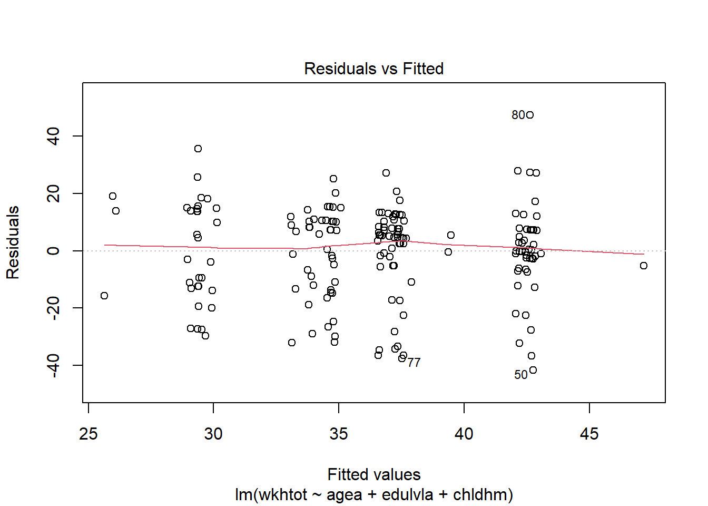
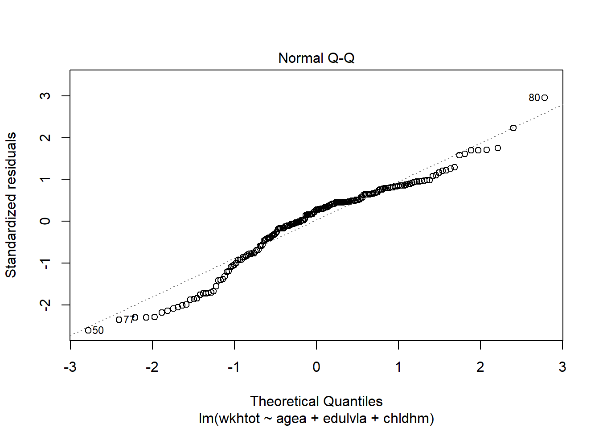
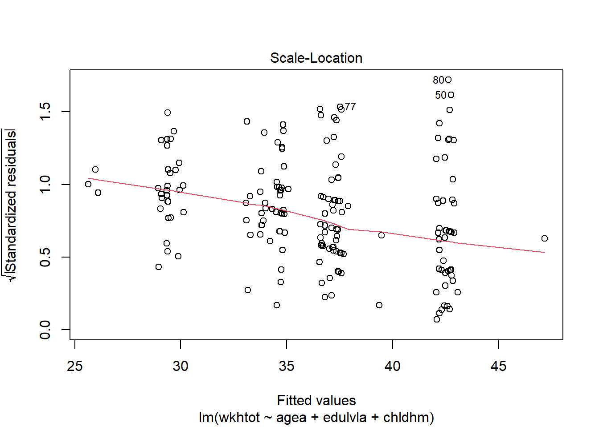
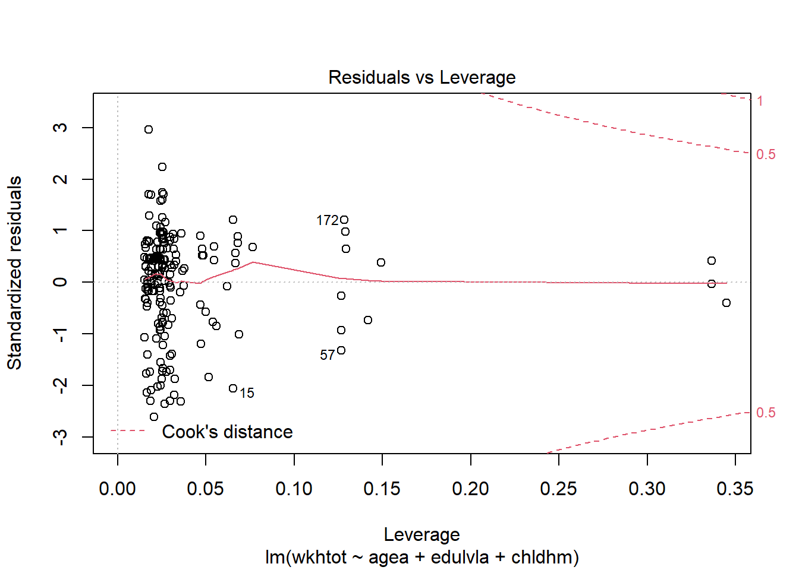
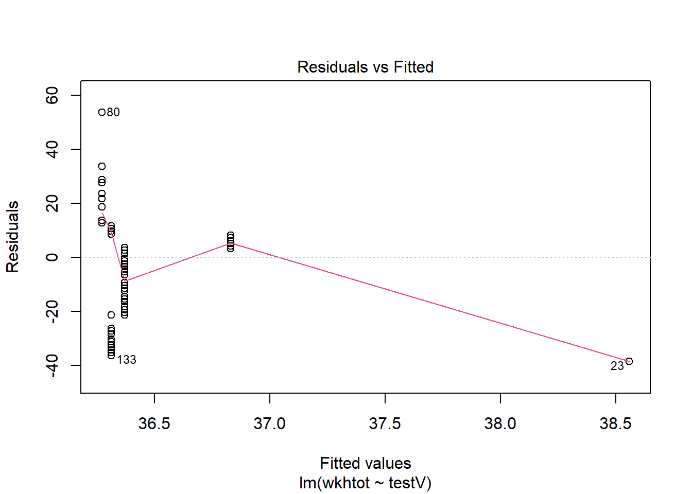
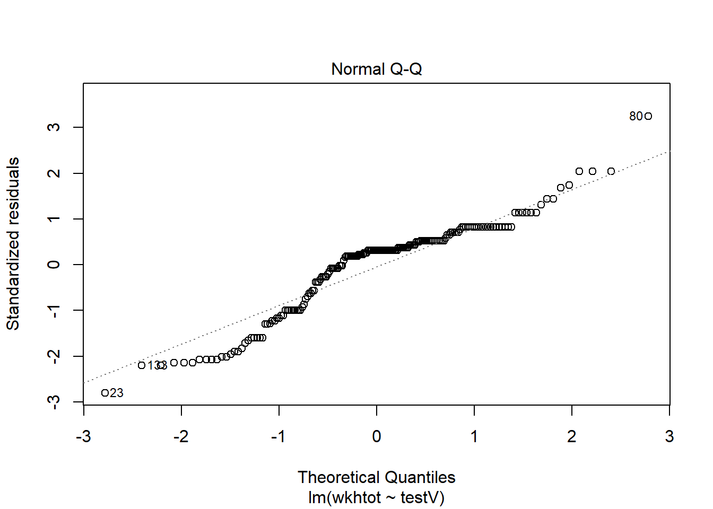
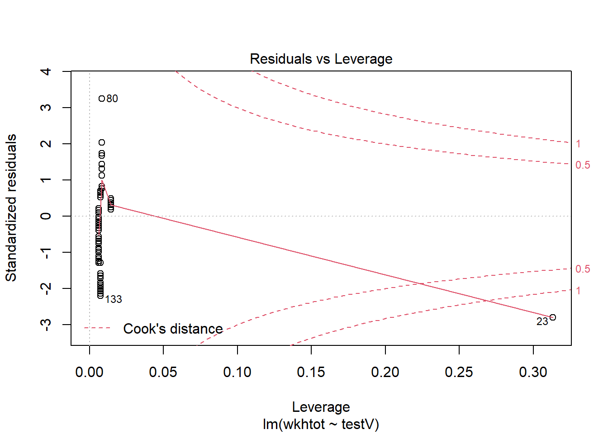
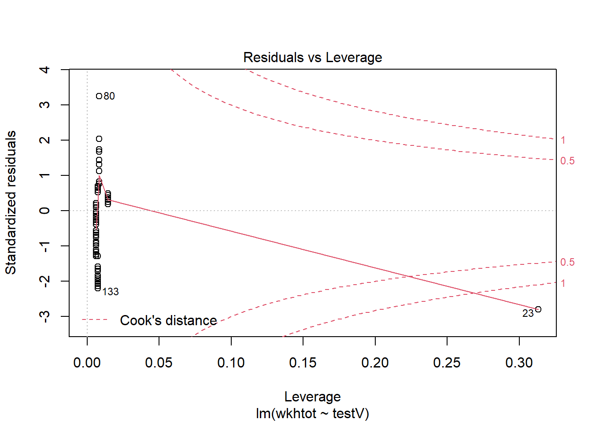

11 Wochenplan 11
…zu den Einheiten vom 03. & 10.12.2020, multiple lineare Regression und Residuenanlayse
11.1 Lernziele WP11
Im Rahmen des 11. Wochenplans wollen wir uns einem multiplen linearen Regressionsmodell widmen. Wie immer möchten wir uns dazu als erstes einen Überblick verschaffen und eine Fragestellung formulieren, bevor dann ein Modell berechnet und interpretiert werden kann. Anschliessend gilt es über eine grafische Residuenanalyse die Anwendungsvoraussetzungen für die multiple lineare Regression zu testen sowie über den Ausschluss von gewissen Fällen das Modell zu verbessern.
Konkret lassen sich folgende Ziele für diesen letzten Wochenplan festlegen:
Sie verstehen, wie Sie mittels Korrelationstabellen erste Ideen für ein multiples Modell sammeln können.
Sie können multiple lineare Regressionsanalysen in R korrekt modellieren, durchführen und interpretieren.
Sie verstehen, wie die Anwendung von
plot()auf unser Ergebnisobjekt bei der Analyse der Qualität und Aussagekraft eines Regressionsmodells helfen kann.Sie können Ausreisser in einem Regressionsmodell ausschliessen und die damit erreichten Veränderungen im Modell einschätzen.
11.2 Aufgaben WP11
- Laden Sie Ihr Datenimport-Skript. Arbeiten Sie anschliessend in einem R-Markdown-Dokument weiter.
- Berechnen Sie mittels der Funktion
rcorr(), die Teil des Paketes “Hmisc” ist, eine Korrelationstabelle zwischen den Variablen “wkhtot”, “agea”, “edulvla” und “chldhm”.
## Min. 1st Qu. Median Mean 3rd Qu. Max.
## 0.00 30.00 42.00 88.31 49.25 888.00## Min. 1st Qu. Median Mean 3rd Qu. Max.
## 16.00 33.75 50.00 49.24 62.00 91.00## ISCED 0-1 ISCED 2 ISCED 3 ISCED 4 ISCED 5-6
## 3 29 83 8 77## Respondent lives with children at household grid
## 65
## Does not
## 135Über den summary()-Befehl wird deutlich, dass die Variable “wkhtot” noch fehlende Werte enthält. Diese gilt es zuerst noch auszuschliessenn – die erste der beiden folgenden Code-Zeile kann dann wiederum im R-Skript integriert werden:
## Min. 1st Qu. Median Mean 3rd Qu. Max. NA's
## 0.00 26.25 42.00 36.47 45.00 90.00 14Anschliessend können wir die Korrelationstabelle berechnen. Da rcorr() eine Tabelle als Input benötigt erstellen wir diese in der Funktion selber über cbind().
## Warning: package 'Hmisc' was built under R version 4.0.3## Loading required package: lattice## Loading required package: survival## Loading required package: Formula## Warning: package 'Formula' was built under R version 4.0.3## Loading required package: ggplot2## Warning: package 'ggplot2' was built under R version 4.0.3##
## Attaching package: 'Hmisc'## The following objects are masked from 'package:base':
##
## format.pval, units## wkhtot agea edulvla chldhm
## wkhtot 1.00 0.05 0.14 0.20
## agea 0.05 1.00 0.06 0.12
## edulvla 0.14 0.06 1.00 -0.10
## chldhm 0.20 0.12 -0.10 1.00
##
## n
## wkhtot agea edulvla chldhm
## wkhtot 186 186 186 186
## agea 186 200 200 200
## edulvla 186 200 200 200
## chldhm 186 200 200 200
##
## P
## wkhtot agea edulvla chldhm
## wkhtot 0.5362 0.0561 0.0074
## agea 0.5362 0.4033 0.0974
## edulvla 0.0561 0.4033 0.1700
## chldhm 0.0074 0.0974 0.1700Die Funktion gibt uns nun drei verschiedene Tabellen aus: Zuerst die eigentlichen Korrelationswerte (1), dann die Fallzahlen (2), wo die 14 fehlende Werte der Variable “wkhtot” nun einen Unterschied ausmachen und schliesslich die p-Werte für die einzelnen Korrelationen. Schnell wird auch deutlich dass die Tabelle redundante Informationen besitzt, da sie über die diagonale Achse gespiegelt ist (d.h. der jeweilige Wert von „edulvla“ und „agea“ ist natürlich derselbe Werte wie derjenige von „agea“ und „edulvla“).
- Interpretieren Sie die Korrelationstabelle kurz: Wo sehen Sie bereits Zusammenhänge, wo nicht? Formulieren Sie anschliessend eine Fragestellung sowie eine Hypothese zu diesen Variablen für ein multiples lineares Regressionsmodell.
In der Tabelle finden wir vier von sechs Zusammenhängen, die uns von ihrer Stärke her interessieren sollten. Dies sind die Werte zwischen den Variablen „wkhtot“ und „edulvla“, „edulvla“ und „chldhm“, „agea“ und „chldhm“ sowie „wkhtot“ und „chldhm“. Letzterer Wert ist ebenfalls auch signifikant. Die weiteren Werte weisen keine beachtenswerten R-Quadrat-Wert aus (und sind auch nicht signifikant).
Fragestellungen könnten dann wie folgt formuliert werden…
…ein Beispiel von Frau Stöckli: Welchen Einfluss haben das Alter, das Bildungsniveau und die Tatsache, ob eine Person mit Kindern zusammenwohnt oder nicht, auf die wöchentliche Anzahl Arbeitsstunden? Und als These: Es wird vermutet, dass der Wechsel von der Gruppe, die mit Kindern zusammenleben, zu der Gruppe, die ohne Kinder leben, zu einem höheren Vorhersagewert für die Anzahl wöchentlicher Arbeitsstunden (“wkhtot”) führt. Es wird vermutet, dass je höher das Bildungsniveau (“edulvla”) desto höher die Anzahl wöchentlicher Arbeitsstunden. Es wird vermutet, dass das Alter ein geringer, positiver Einfluss auf die Anzahl wöchentlicher Arbeitsstunden hat.
…ein Beispiel von Herr Ineichen: Wie wirkt sich die Tatsache ob Kinder im eigenen Haushalt leben und das Ausbildungsniveau auf die Anzahl gearbeiteter Wochenstunden aus? Kontrollvariable: Alter. Hypothese: Menschen mit höherem Bildugnsniveau und ohne Kinder haben arbeiten mehr Stunden pro Woche als Menschen mit tiefem Bildungsniveau und ohne Kinder.
…ein Beispiel von Herr Schürmann: Wirken die unabhängigen Variablen “agea”, “edulvla” und “chldhm” einzeln Betrachtet auch inder GG auf die abhängige Variable “wkhtot” ein? Nullhypothese: Alter, Bildungsniveau und Kinder zu Hause beeinflussen positiv die Arbeitsstunden pro Woche. Alternativhypothese: Alter, Bildungsniveau und Kinder zu Hause haben keinen Effekt auf die Arbeitsstunden pro Woche.
Bei drei Beispielen wird deutlich, dass uns die Variable zu den Arbeitsstunden als abhängige Variable interessiert, und wir die Effekte darauf von den anderen, unabhängigen Variablen beschreiben möchten.
- Berechnen Sie anschliessend Ihr Regressionsmodell mittels der Funktion
lm(). Speichern Sie das Modell wie immer als Objekt ab und interpretieren Sie es anschliessend.
##
## Call:
## lm(formula = wkhtot ~ agea + edulvla + chldhm, data = daten_ess)
##
## Residuals:
## Min 1Q Median 3Q Max
## -41.742 -9.298 4.363 10.367 47.374
##
## Coefficients:
## Estimate Std. Error t value Pr(>|t|)
## (Intercept) 31.11304 4.17227 7.457 3.67e-12 ***
## agea 0.01657 0.06952 0.238 0.81184
## edulvla.L -1.72936 6.37703 -0.271 0.78656
## edulvla.Q 9.06236 5.48903 1.651 0.10049
## edulvla.C -4.07729 5.33272 -0.765 0.44553
## edulvla^4 3.21044 3.63580 0.883 0.37842
## chldhmDoes not 7.69041 2.61913 2.936 0.00376 **
## ---
## Signif. codes: 0 '***' 0.001 '**' 0.01 '*' 0.05 '.' 0.1 ' ' 1
##
## Residual standard error: 16.15 on 179 degrees of freedom
## (14 observations deleted due to missingness)
## Multiple R-squared: 0.07828, Adjusted R-squared: 0.04738
## F-statistic: 2.534 on 6 and 179 DF, p-value: 0.02228Die Koeffizienten unseres Modells lassen sich wie folgt interpretieren: Wenn jemand 0 Jahre alt ist, auf dem „ISCED 0-1“ Bildungsniveau ist und Kinder zuhause hat, dann würde diese Person rund 31h pro Woche arbeiten (Intercept). Mit jeden zusätzlichen Altersjahr arbeitet eine Person gemäss dem Modell 0.02h mehr. Wechselt man hingegen vom ersten auf das zweite Bildungsniveau so arbeitet man 1.7h weniger, beim Wechsel auf das dritte Bildungsniveau wiederum 9h mehr, usw. Keine Kinder im Haushalt zu haben führt wiederum dazu, dass man fast 8h mehr Arbeitet pro Woche.
Von den Koeffizienten ist lediglich derjenige für die Variable zu Kinder im Haushalt signifikant. Alle anderen Koeffizienten haben hingegen hohe Wahrscheinlichkeiten zufällig aufzutreten, wenn sie keinen Effekte hätten in der Grundgesamtheit (etwa der Koeffizient von „agea“ hat eine Wahrscheinlichkeit von über 80%, völlig zufällig aufgetreten zu sein). Dies sieht man auch anhand der Standardfehler, die alle sehr grosse zufällige Streuung der Koeffizienten ausweisen. Über die Tabelle wird weiter auch nochmals die Berechnung der Werte für die t-Tests der Regressionskoeffizienten deutlich (Diaz-Bone 2019, 223). Der jeweilige t value ergibt sich nämlich dadurch, dass ein Koeffizient durch den Standardfehler geteilt wird, also etwa 0.01657 / 0.06952 = 0.238. Dieser Werte fällt wiederum bei einer t-Verteilung von 179 Freiheitsgraden und einem 95% Signifikanzniveau in den Annahmebereich der 0-Hypothese.
Unser Modell bzw. unsere unabhängigen Variablen erklären rund 8% bzw. 5% der Varianz von der Variable „wkhtot“. Dieser Wert selber ist aber leicht signifikant – oder umgekehrt formuliert: Es gibt lediglich eine Chance von etwas mehr als 2% dass wir diesen R-Quadrat Wert erhalten würden, obschon das Modell in der Grundgesamtheit keine Erklärungsleistung besitzt.
- Prüfen Sie dann die Anwendungsvoraussetzungen (vgl. Diaz-Bone 2019, 202f) mittels
plot(). Wie beurteilen Sie die Qualität Ihres Modells?
Die plot()-Funktion weisst uns fünf verschiedenen Plots zur grafisch gestützten Residuenanalyse aus:

Die erste Grafik ist ein Streudiagramm der Residuen und der Vorhersagwerte. Da hier der Vorhersagwerte (und nicht die abhängige Variable) lassen sich hier alle unabhängigen Variablen überprüfen, und zwar auf die Frage der Linearität hin.11 Ein spezifisches Muster im Plot würde auf fehlende Linearität hinweisen oder auch darauf, dass es weitere erklärende Variablen gibt, die noch nicht im Modell eingeschlossen sind (Manderscheid 2017, 194). In unserem Fall scheint die Linearitätsannahme nicht verletzt zu sein und es zeigt sich auch kein (starkes) spezifisches Muster zu zeigen.
Die zweite Grafik, der Normal-Q-Q Plot, gibt uns Hinweise zu der Normalverteilung der Residuen. Dazu werden die empirischen Verteilungen der Residuen (die Standardabweichungen der Werte) gegen die Quantile geplottet, die bei einer Normalverteilung zu erwarten wären. Quantile sind hier die Wahrscheinlichkeiten: In der theoretischen Normalverteilung liegen links und rechts von 0 je 50%. Je weiter die Werte von Null abweichen, desto weniger Fälle liegen dort (links von -1 wären noch rund 13% der Fälle). Die theoretische Normalverteilung – die gerade, gestrichelte Linie – wird dann mit der empirischen Verteilung verglichen – die über Kreise gebildete, “wackelige” Linie. Ziel sollte es sei, dass eben im mindestens im Bereich + 1 x Standardabweichung und - 1 x Standardabweichung (68% der Fälle) die beiden Linien ziemlich deckungsgleich wären. Bei grösseren Stichproben werden die Abweichungen immer weniger problematisch (vgl. auch Diaz-Bone 2019:231).12
Die dritte Grafik der Scale-Location prüft die Homoskedaszität in dem die Vorhersagwerte gegen die standardisierten Residuen geplottet werden. Die Punkte sollten hier horizontal in einheitlicher Breite variieren (Manderscheid 2017, 194). Wie bereits bei der ersten Grafik findet sich hier eine rote Linie, ein sogenannter Smoother, ist eine immer aufs neue geschätzte Line, die im optimalfall gerade verlaufen sollte. Hier sehen wir nun, dass das wir vor allem bei grösseren Vorhersagewerte auch grössere Residuen haben (unabhängig davon ob diese positiv oder negativ sind). Hier scheint also eine gewisse Heteroskedaszität vorzuliegen.
Die vierte und letzte Grafik stellt die Residuen dem sogenannten Leverage Wert gegenüber. Dieser Wert gibt an, wie stark ein jeweiliger Punkt auf das Modell wirkt (dessen Hebelwirkung). Je stärker ein solcher Leverage-Wert eines Punktes ist – je weiter rechts er ist – desto geringer sollte die Residue sein. Insbesondere die Werte ausserhalb der Cook’s Distance sollten wir ausschliessen.
Die Anwendungsvoraussetzung der geringen Multikollinearität konnten wir bereits in der Korrelationstabelle oben überprüfen.13
- Bonusaufgabe: Versuchen Sie, ein neues Modell zu berechnen, in dem mögliche Ausreisser fehlen, die Ihnen die grafische Residuenanalyse aufgezeigt hat. Wie verändert sich die Modellgüte bzw. die Erklärungsleistung Ihres Modells?
In allen vier Grafiken, welche die Funktion plot()von unserem Modell erzeugt hat, wurden immer wieder bestimmte Fälle ausgewiesen, die das Modell womöglich stark beeinflussen. Diese Fälle – insbesondere diejenige im letzten Plot – können wir versuchsweise ausschliessen und ein neues Modell rechnen.
Modellm_2 <- lm(wkhtot ~ agea + edulvla + chldhm,
data = daten_ess[-c(15, 50, 57, 77, 80, 172),])
summary(Modellm_2)##
## Call:
## lm(formula = wkhtot ~ agea + edulvla + chldhm, data = daten_ess[-c(15,
## 50, 57, 77, 80, 172), ])
##
## Residuals:
## Min 1Q Median 3Q Max
## -37.328 -7.769 3.694 9.830 35.360
##
## Coefficients:
## Estimate Std. Error t value Pr(>|t|)
## (Intercept) 31.09923 4.04704 7.684 1.1e-12 ***
## agea 0.02215 0.06632 0.334 0.73882
## edulvla.L -2.19703 6.04937 -0.363 0.71691
## edulvla.Q 8.35237 5.21162 1.603 0.11084
## edulvla.C -3.47810 5.34504 -0.651 0.51609
## edulvla^4 2.67714 3.72067 0.720 0.47278
## chldhmDoes not 8.02351 2.46417 3.256 0.00136 **
## ---
## Signif. codes: 0 '***' 0.001 '**' 0.01 '*' 0.05 '.' 0.1 ' ' 1
##
## Residual standard error: 15.1 on 173 degrees of freedom
## (14 observations deleted due to missingness)
## Multiple R-squared: 0.0841, Adjusted R-squared: 0.05234
## F-statistic: 2.648 on 6 and 173 DF, p-value: 0.01755Der Auschluss dieser Fälle hat dazu geführt, das die Erkläungsleitung unseres neuen Modells gegenüber dem alten um ein halbes Prozent gestiegen ist.
11.3 Ergänzung: ein schlechtes Beispiel
Als Ergänzung zum Inhalt in der Einheit wird hier noch ein künstliches, besonders negatives Beispiel konstruiert. Dieses verletzt besonders stark die die Anwendungsvoraussetzungen, also die Linearitätsannahme, die Varianzhomogenität und die Normalverteilung der Residuen.
Dazu ordnen wir zuerst den Datensatz nach der Grösse der Variable „wkhtot“ und konstruieren uns eine Variable, die ein bestimmtes, extremes Muster aufweist:
daten_ess <- daten_ess[order(daten_ess$wkhtot),]
daten_ess$testV <- 10
daten_ess$testV[1] <- 400
daten_ess$testV[25:74] <- 20
daten_ess$testV[75:99] <- 2000
daten_ess$testV[100:123] <- 90
daten_ess$testV[124] <- 2
daten_ess$testV[125:75] <- 100
daten_ess$testV[150:200] <- 3Anschliessend berechnen wir ein neues Modell und betrachten die Grafiken, die uns plot()generiert, und wie sich hier dieses extreme Muster auswirk:
 

References
Diaz-Bone, Rainer. 2019. Statistik Für Soziologen. Konstanz: UVK.
Manderscheid, Katharina. 2017. Sozialwissenschaftliche Datenanalyse Mit R. Eine Einführung. Wiesbaden: Springer VS.
Die genauere Prüfung der Linearität von einzelnen Variablen kann beispielsweise über die Funktion
leveragePlots()des Paketes „car“ erfolgen.↩︎Siehe für Details auch S.42ff in Schnell, Rainer (2015): Graphisch gestützte Datenanalyse. Berlin, Boston: De Gruyter↩︎
Eine genauere Möglichkeit um die Multikollinearität zwischen den unbahängigen Variablen zu qualifizieren (Diaz-Bone 2019, 206) bietet die Funktion
vif(), die ebenfalls Teil des Paketes “car” ist (Manderscheid 2017, 196).↩︎